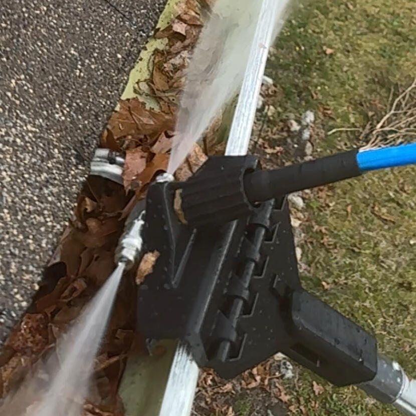
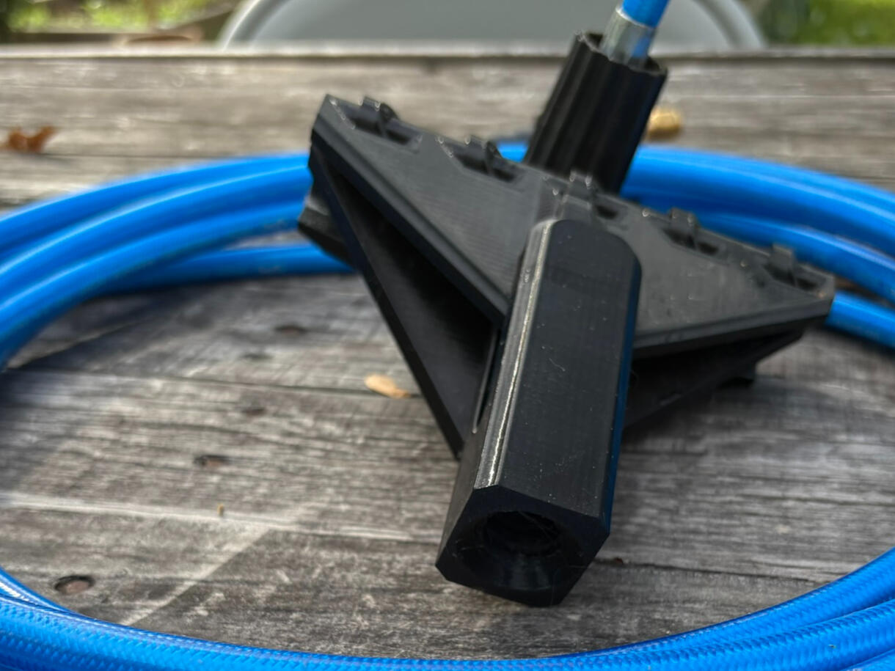
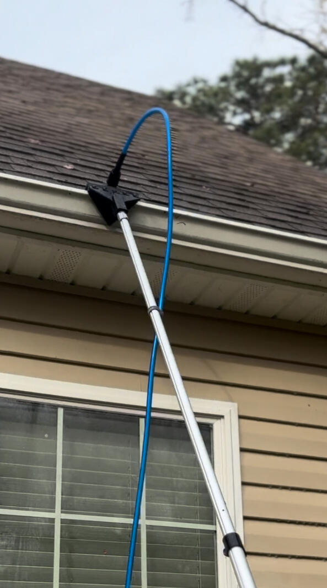
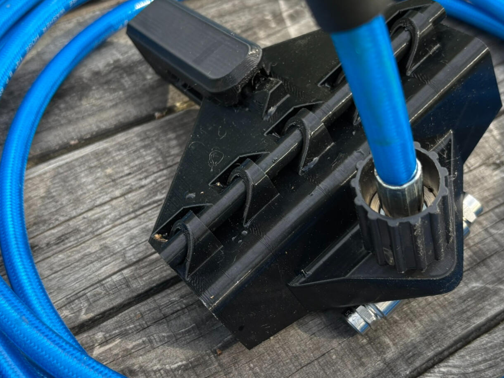
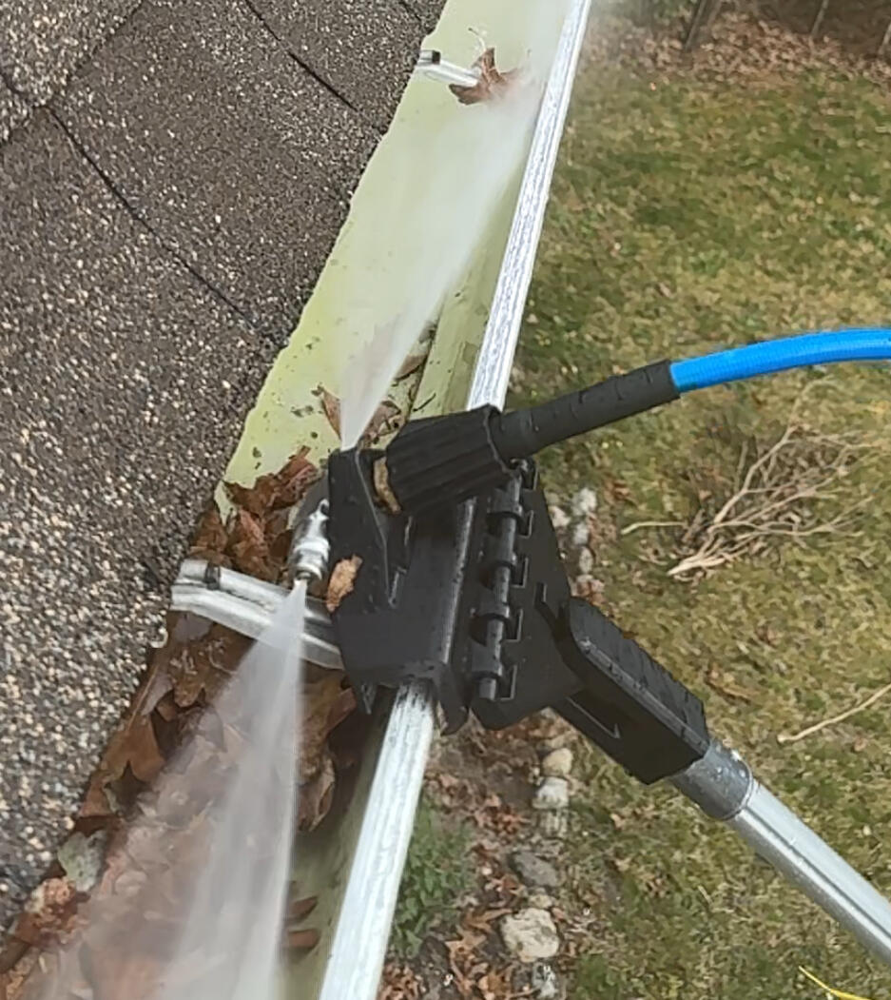
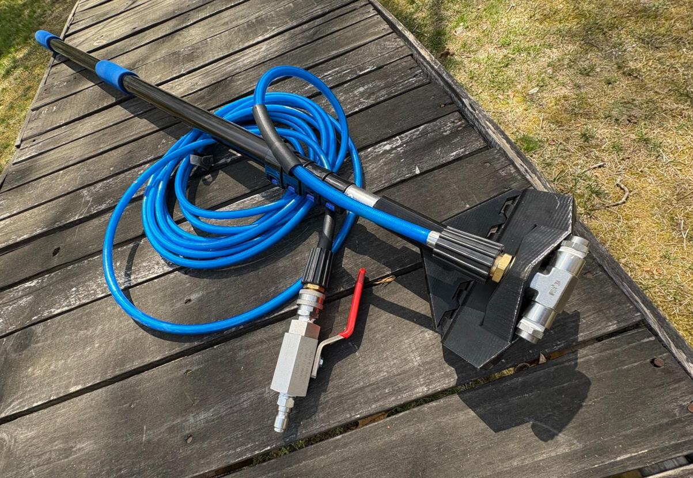
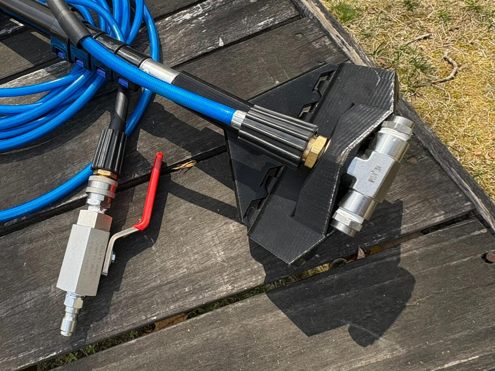

The Gutter Slide Pro is a precision-engineered pressure washer attachment that lets you blast gutters clean without ever touching a ladder. Safe, fast, and spotless — up to 3 stories.

Three steps is all it takes. Attach, extend, clean — your gutters have never been this easy to maintain.
Connect the Gutter Slide Pro hose to any standard pressure washer. The acme-threaded tool head fits virtually all extension poles you already own.
The rubberized polymer head glides smoothly over the gutter face without scratching. Reach up to 3 stories from the safety of the ground.
What used to take all day now takes 30 minutes or less. No ladders, no risk, no mess left behind — just clean, clear gutters top to bottom.
See exactly how easy it is to clean your gutters from the ground — no ladder, no hassle.
Every material and component was chosen for durability, ease of use, and long-term reliability in the field.
Throw it in the truck bed, toss it in the shed — the Gutter Slide Pro is built to take abuse and keep on performing.
The soft rubberized polymer glides over painted and aluminum gutter faces without leaving a mark — ever.
The featherweight tool head and flexible hose make overhead work effortless — even extended to full reach.
High-quality stainless hardware resists rust, corrosion, and the wear of season-after-season use.
Works with virtually every extension pole on the market — no proprietary adapters, no special purchases required.
The tool head sprays in both directions simultaneously, canceling out backwards pressure so you stay in full control with no recoil — even at full extension.
Not just for gutters. Use the Gutter Slide Pro as a high-reach pressure washing pole to clean siding, eaves, and other hard-to-reach surfaces safely from the ground.
Angle the tool head down into your downspouts to blast out clogs and debris — no separate tool needed. Keep water flowing freely all season long.



The Gutter Slide Pro connects to your existing setup via standard quick-connect fittings and pairs with extension poles you may already own.
With a standard extension pole, the Gutter Slide Pro can safely clean gutters on homes up to 3 stories — all from ground level.
Secure checkout powered by Shopify. Ships fast — start cleaning smarter this weekend.
The complete Gutter Slide Pro kit — everything you need to safely clean gutters from the ground using your existing pressure washer. Patent pending. Built for homeowners and pros alike.
What's Included
Secure payment · Fast shipping · contact@gutterslidepro.com


